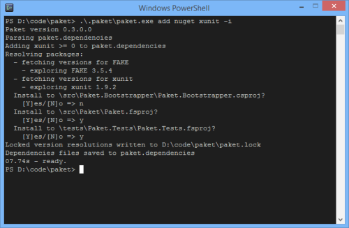

Dependency management using Paket
By default ProjectScaffold uses Paket to manage NuGet packages. This gives you a sane way to manage your dependencies, especially in solutions that contain F# projects or have lots of dependencies.
Package restore
The build process will use .paket/paket.bootstrapper.exe to download the latest paket.exe.
It then looks into the paket.lock file and restores all listed NuGet packages into the packages folder.
This folder is listed in .gitignore, so you don't have to worry about accidentally commiting binaries.
Updating packages
If you want to update your package dependencies just run:
1:
|
$ .paket/paket.exe update |
This will update the packages in the paket.lock file.
Installing new packages
In order to install new packages you can use the paket add command:
1:
|
$ .paket/paket.exe add nuget PACKAGENAME [version VERSION] -i |
This will update the paket.dependencies file and allow you to select the projects for which you want to install the package:

More details can be found in the Paket documentation.